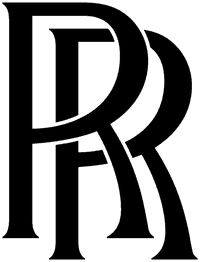
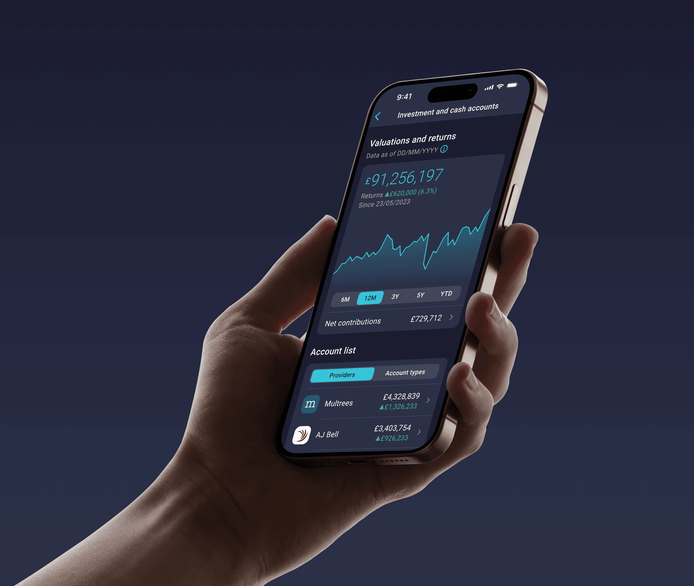
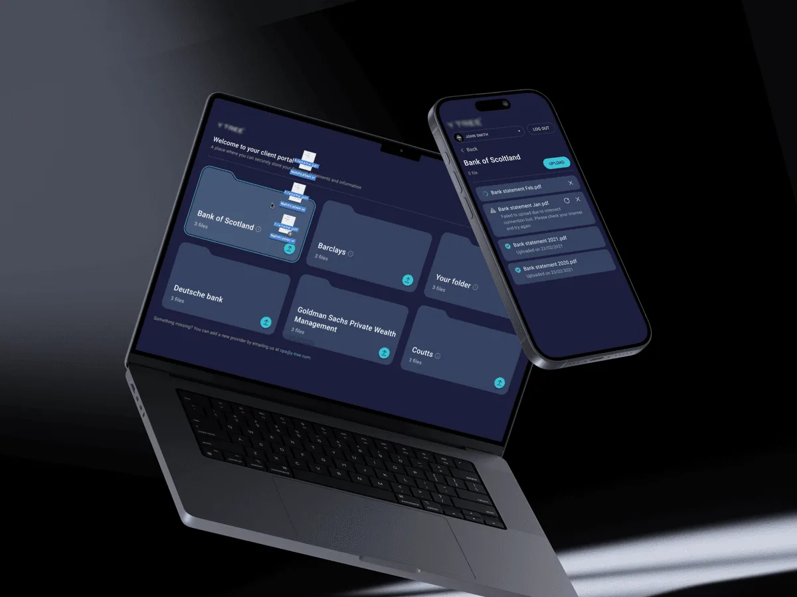
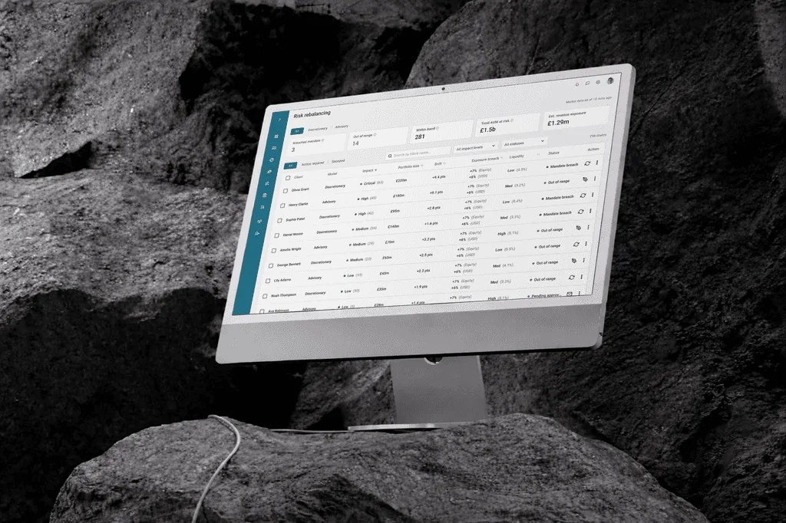
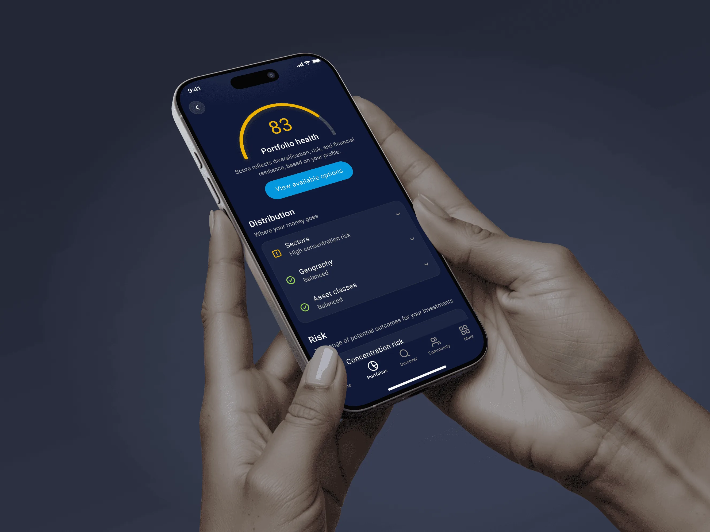
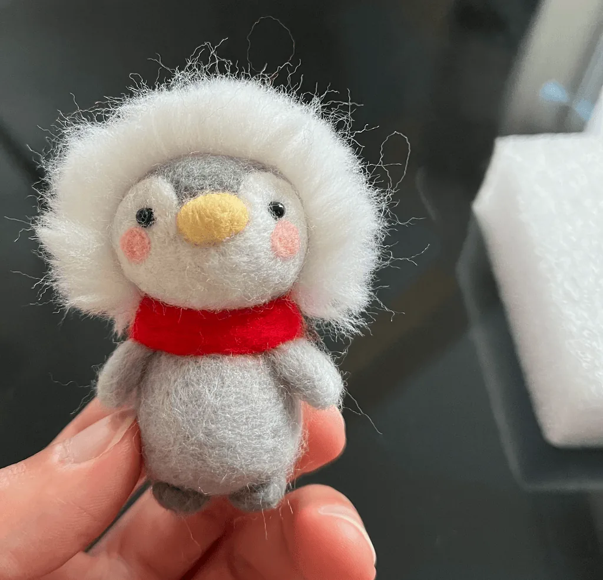
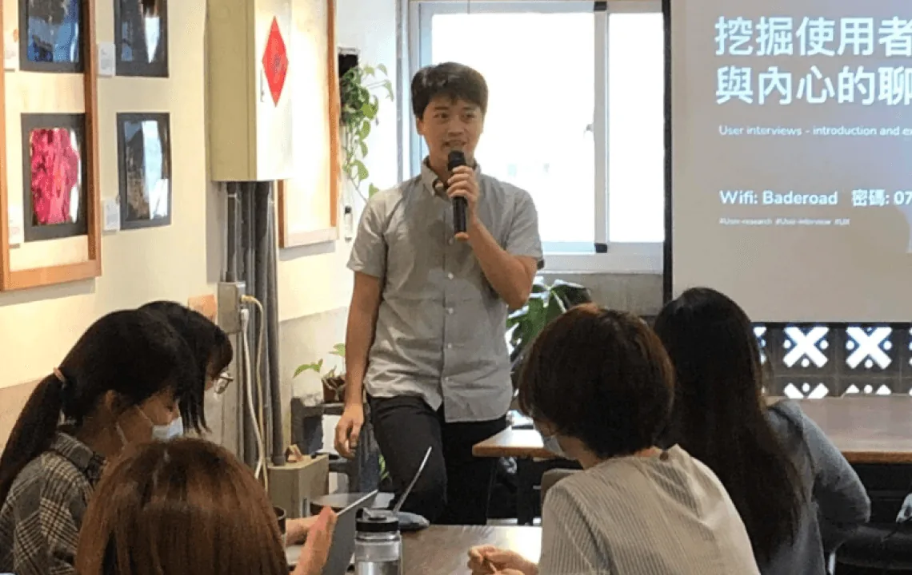

Turning complex workflows and data-heavy systems into clear, usable experiences.
14+ yrs designing digital products · Multi-role platforms · Design systems · B2B & B2C · London

Designing high-impact products used by 100M+ users, improving financial clarity and operational efficiency for enterprise teams.

Improved data interpretation and redesigned multi-role workflows across advisors, analysts, and data operations for a clearer, more efficient platform.
View case study
Clarified financial data across navigation, structure, and metrics to create a clearer, more trustworthy experience.
View case study
Introduced a client portal with secure uploads significantly reducing onboarding effort.
View case study
Architected an end-to-end portfolio rebalancing workflow where AI surfaces recommendations, advisors decide, and every action stays auditable and mandate-aligned.
View case study
Clarified portfolio risk and volatility through neutral framing and contextual explanations, helping users make informed decisions independently.
View case study
Reframed transactions as trip memories to create a more emotional, engaging money experience.
View case studyEarlier work spans consumer apps, B2B platforms, and enterprise systems across healthcare, hardware, and sustainability. Available on request. Get in touch →
Known for making complexity simple — calm, structured, collaborative, and fast in high-stakes environments.
“Working with Chun was a pleasure. He played a key role in shaping several of our most important internal tools and the client-facing app. His ability to translate abstract problems into elegant, user-focused designs made a real difference to our product delivery.”
“Our product had a lot of moving parts, different user types, evolving requirements, and high expectations. Chun brought calm, clarity, and fast execution. His ability to translate messy ideas into intuitive experiences was exactly what we needed.”
“Chun was a fantastic UX partner – quickly grasping complex data challenges and translating them into clear, interactive design concepts. He played a key role in developing a UX proof of concept that brought our product vision to life, and helped turn dense, technical content into user-friendly visuals to enhance both client engagement and thought leadership. A pleasure to work with.”
“It's been a pleasure collaborating with Chun for nearly four years. He transformed our design system, bridged Figma with Android APIs, and elevated both iOS and Android experiences. His work enabled a small team to maintain a 100-screen app efficiently. Beyond his skills, he's collaborative, respectful, and positive. Any team would be lucky to have him.”
“I worked with Chun at Y TREE for over 4 years. He's an exceptional UX/UI designer who built design systems for complex financial apps and delivered intuitive web and mobile experiences under tight deadlines. Efficient, detail-oriented, and highly collaborative, Chun is a huge asset to any team.”
“Chun delivered high-quality, polished design work with a strong sense of aesthetics and interface refinement. His visual direction for PowderSpark aligned seamlessly with our premium brand positioning, and his professionalism and responsiveness made a real impact on the final result.”
How I approach uncertainty, trade-offs, and responsibility in product design
I came in with a dark humour concept. One conversation with Claude made me question what the product was actually asking people to face.
How I navigated shifting business models, responsibility, and risk in a real-world platform build.
A candid reflection on judgement, coordination, and the mistakes I made transitioning into a project lead role.
Away from the screen, I run, organise small communities, and make things by hand. It keeps my thinking sharp, my empathy grounded — and reminds me to slow down, especially when my little one is winning the negotiation.

